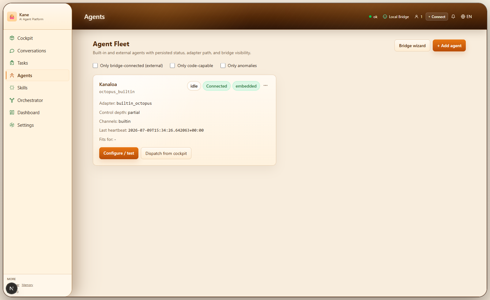
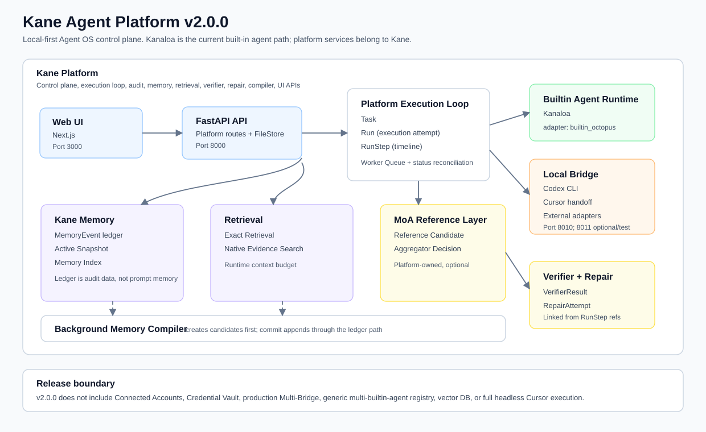

Every execution attempt gets a timeline, linked references, and status reconciliation.
Local-first Agent OS for inspectable execution.
Kane turns agent work into durable platform records: tasks, runs, timelines, evidence, verifier results, repair attempts, memory events, and status reconciliation that can be inspected instead of guessed.
git clone https://github.com/alvin20062006-beep/Kane-Agent-Platform cd Kane-Agent-Platform npm install npm run setup npm run dev:stack

Built for execution truth.
Kane is not a memory framework, RAG framework, or workflow engine. Its shared services exist to make agent execution understandable, auditable, and repeatable.
Append-only AI memory events, active snapshots, index projection, and compiler candidates.
Local Bridge paths for Codex CLI, Cursor handoff, callbacks, status, and honest failures.
Verification status, findings, summaries, and evidence references without arbitrary shell execution.
Retry, repair, and rollback intent are recorded without pretending high-risk actions are automatic.
Reference candidates and aggregator decisions are platform-owned optional records.
Platform-owned architecture.
Kane owns the control plane and shared services. Kanaloa is the current built-in agent path, while external adapters connect through the Local Bridge.

Current built-in AI agent path. It is not the platform and not the memory subsystem.
Connects local CLI and handoff adapters. Missing tools and permission errors stay visible.
UI surface for timelines, verifier results, repair attempts, compiler candidates, memory, and retrieval.
The execution flow stays inspectable.
Kane preserves the important parts of agent execution as platform records instead of burying them in prompt text, temporary logs, or agent-private state.
Download and run locally.
Kane v2.0.0 is designed for local/private use. Clone the repository, install dependencies, run setup, and start the local Web/API/Bridge stack.
npm run typecheck:web npm run test:api npm run test:bridge npm run wait:stack npm run test:e2e:smoke